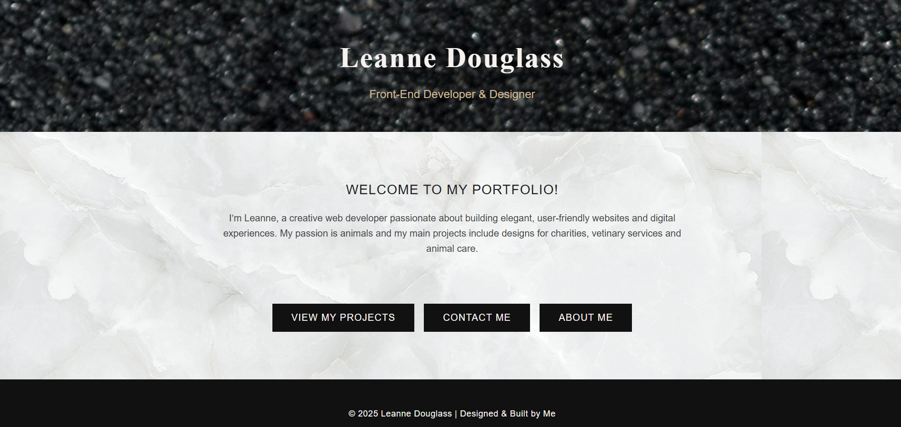

Goose Run Game
Goose Run! is a 2D arcade-style game in Processing (Java). Guide a goose from park to university while avoiding traffic.


Read the case study
Goal: Build an arcade loop with smooth input and readable UI.
Highlights: Entity update loop, axis-aligned collision, pause menu, game over screen.
What I’d improve: Enemy spawn balancing and asset pipeline.
Portfolio Website
Semantic HTML5 + modern CSS. Theme system, mobile nav, focus-visible rings, and IntersectionObserver reveals.
Read the case study
Outcome: Professional brand, consistent UI tokens, and improved a11y.
Online Dog Daycare Service
Maggie’s Pawcations—landing page with booking CTA, warm colour system, and friendly typography.


Read the case study
Focus: Clear IA, approachable tone, and form usability.
Outcome: Structured sections for services and social proof.